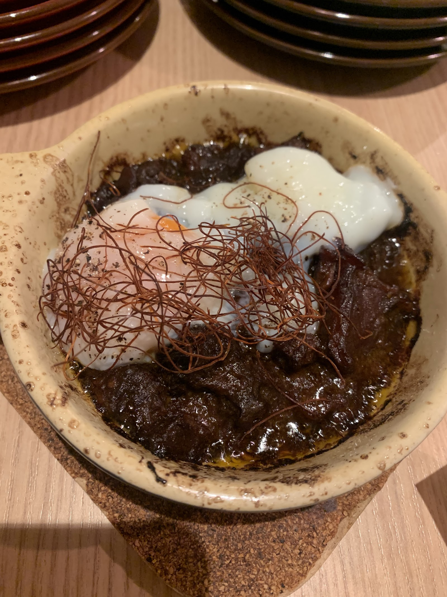
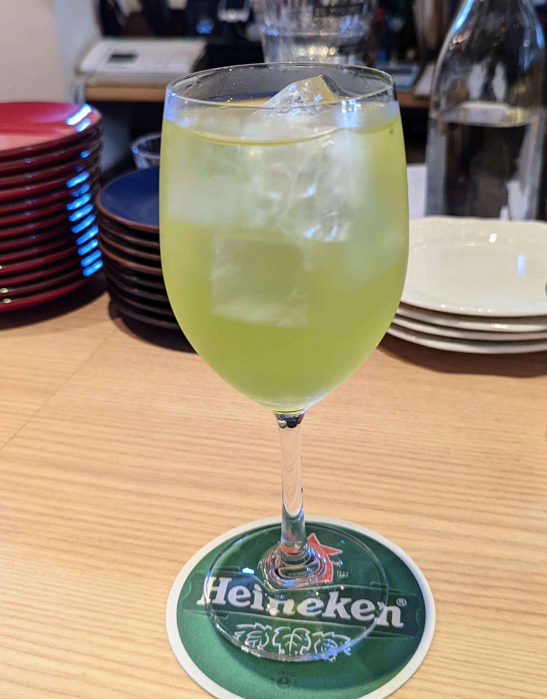

CONCEPT
我孫子の街なかで、大人がふらりと立ち寄れる時間を。ARUKASが大切にしている雰囲気をご紹介します。
ARUKASの雰囲気
木のカウンターを思わせる落ち着いた空間で、ワインやクラフトビールとともに洋風の一皿を楽しめるような、大人のためのビストロのような雰囲気を目指しています。仕事帰りにひとりでも、気の置けない誰かとでも、肩肘張らずに過ごせる時間をご用意しているような場所です。

料理の雰囲気
土鍋仕立てで供されるような煮込み料理に、ポーチドエッグがのせられた一皿からは、じっくりと火を入れた洋風料理へのこだわりがうかがえます。あたたかみのある一皿を、ゆっくりと味わっていただけるような雰囲気です。
写真提供: T Sakuraさん(Googleマップ)

ドリンクの雰囲気
氷の涼やかな彩りが目を引く、グリーンのカクテルのような一杯。ワインやクラフトビールとあわせて、その日の気分に寄り添う一杯を選べるような品揃えを感じさせます。
写真提供: K Nさん(Googleマップ)
空間の雰囲気
木のカウンターがしつらえられているような、落ち着いたトーンの店内。派手さよりも、大人がほっと肩の力を抜けるような静けさを大切にしているような空間です。